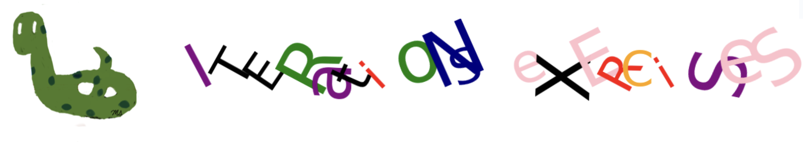

Iterations Exercises#

Warm Up Question#
Determine the output of the code below:
print(list(range(5)))
print(list(range(3,8)))
print(list(range(5, 43, 10)))
Warm Up Question#
Write a program that displays the following list of numbers using a range() function. \( [3, 7, 11, 15, 19]\)
Warm Up Question#
Determine the output of the code below:
for i in range(3):
print(2*i)
Warm Up Question#
Determine the output of the code below:
n = 5
while n <= 8:
print(2*n)
n += 1
Warm Up Question#
Write a program that calculates the sum of the first 50 positive integers.
Warm Up Question#
Determine the output of the code below:
n = 5
while True:
print(n)
n += 2
if n > 9:
break
Question-1#
Print the letters with negative even indexes (-2, -4, …) from the given text using:
a for loop
a while loop
slicing with a step. (use join method())
text = 'abcdefghijklmnopqrstuvwxyzABCDEFGHIJKLMNOPQRSTUVWXYZ'
Print the letters in a single line and comma separated.
Sample Output:
text : abcdefghijklmnopqrstuvwxyzABCDEFGHIJKLMNOPQRSTUVWXYZ
for loop : Y,W,U,S,Q,O,M,K,I,G,E,C,A,y,w,u,s,q,o,m,k,i,g,e,c,a
while loop: Y,W,U,S,Q,O,M,K,I,G,E,C,A,y,w,u,s,q,o,m,k,i,g,e,c,a
slicing : Y,W,U,S,Q,O,M,K,I,G,E,C,A,y,w,u,s,q,o,m,k,i,g,e,c,a
Question-2#
Find the sum of the first \(100\) terms of the following sequence:
\(\displaystyle \frac{1}{1^3+1^2}, \frac{1}{2^3+2^2}, \frac{1}{3^3+3^2}, \frac{1}{4^3+4^2}, ...\)
Use a for loop.
Use a while loop.
Question-3#
Ask the user to input a name and then insert a random punctuation mark between each character of the name.
Ensure that the output does not have a punctuation mark at the end.
Sample Output
Please enter a name : ashley
Randomly generated name: a&s#h”l#e”y
Question-4#
Ask the user to input a number and print the consecutive pairs of digits within this number.
Example: The consecutive digits in 156319672 are 56 and 67.
Sample Output
Please enter a number: 156319672
Consecutive pairs are: 56,67
Question-5: Secret Number Game#
This is another version of the Guess the Secret Number Game.
The user selects a secret 3-digit number.
The computer randomly selects a 3-digit number to find the secret number.
You can use random.randint or numpy.randint.
Count the number of attempts by the computer.
If the computer can find the secret number in fewer than 100 attempts, it wins; otherwise, it loses the game.
After each attempt, print the computer’s guess.
After each attempt, provide a hint to the computer whether the secret number is larger or smaller than the guess. The computer makes the next guess based on the hint
Sample Output
Choose a 3 digit secret number: 123
Try Number: 0 Guess: 654 is LARGE. Try Again!
Try Number: 1 Guess: 638 is LARGE. Try Again!
Try Number: 2 Guess: 467 is LARGE. Try Again!
COMPUTER WINS!
Number of tries: 3
Question-6: Scatter Plot#
Use a for loop to randomly select 100 points on a coordinate plane and plot them individually as a scatter plot. For each point:
The x and y coordinates are randomly chosen between 0 and 1.
The size of the point is a random number between 10 and 500.
The color is chosen from the characters of he following string: color_str = ‘rgbky’.
‘r’ represents red, ‘g’ represents green,’b’ represents blue, ‘k’ represents black,’y’ represents yellow
The transparancey is represented by a random number between 0 and 1.
Refer to the scatterplot section in Appendix: Visualization for implementation guidance.
Question-7: Empirical Probability#
Flip a coin 100 times and count the number of heads.
Use the string ‘TH’ to randomly select either ‘T’ (tail) or ‘H’ (head).
Randomly choose 0 or 1 as the index of the character that will be selected randomly.
Question-8: Rotating Stick#
Use a for loop and the sleep method from the time library to sequentially display the rotation of ‘’, ‘–’, and ‘/’ characters 20 times.
Add a waiting time between each character to simulate the rotation of a stick.
Ensure that after printing each character, it is deleted before the next one is printed to maintain the rotating effect.
Question-9: Counter#
Use a for loop and the sleep method from the time library to display a counter counting from 0 to 999.
Ensure that one-digit numbers have two zeros added to the left, and two-digit numbers have one zero added to the left.
After printing each number, delete it before the next one is printed to maintain the rotating effect.
Numbers: 001, 002,…,010,011,…,999
Business Applications#
Question: Max of Revenue#
Revenue (R) is the product of the number (n) of items sold and the price (p) of the item.
\(R = p\cdot n\)
The number of item sold is given by the following equation: \(n = -1.5p+30\)
Write a program which finds the \(p\) which maximize the revenue for \(0\le p \le 20\)
Plot the graph of revenue for \(0\le p \le 20\)
Question: Profit#
Profit (P) is the difference between Revenue and Cost
\(Profit = Revenue - Cost\)
The monthly fixed cost of a cable factory is 1500 dollars. Each cable costs 13 dollars and sells for 25 dollars.
Find the profit of producing 400 cables.
For what number of cables produced profit is zero.
Hint: Calculate the profit for \(n\) between 1 and 400.
Question: Linear Depreciation#
The value of a new machine is \(100,000\) dollars and its values is depreciated by \(7500\) dollars per year. After how many years the value of the machine will be 2,500 dollars.
Hint: Calculate the value for years between 1 and 100.
Question: Equilibrium Point#
An equilibrium point is where the demand and supply curves intersect.
For the given demand and the supply functions find the equilibrium point.
Demand: \(p(q) = -0.03q + 1000\)
Supply: \(p(q) = 0.02q + 400\)
Hint: Calculate the demand and supply for \(q\) between 1 and 20,000.
Question: Linear Programming#
Linear programming involves finding the highest or lowest possible outcome of a linear function, while satisfying specific constraints.
The store sells three items labeled (a, b, c) priced at 2, 3, and 4 dollars respectively. The following conditions are known:
The store can sell up to 100 units of each item.
The combined sales of items b and c exceed 90 units.
The total sales of items a and b do not surpass 50 units.
The sales of items a and c are more than 80 units.
What is the highest revenue achievable, and at what quantities of items is this maximum revenue attained?
Question: Home Mortgage#
Amortization is paying off a loan by making equal payments.
The present value of an amortized loan is given by the following formula: \(\displaystyle P = R \left( \frac{1-(1+\frac{r}{m})^{-mt}}{\frac{r}{m}} \right)\) where,
\(P\): Present value
\(R\): regular payment
\(r\): annual interest rate
\(m\): number of payments in a year
\(t\): number of years
If you take out an 449,000 dollars loan to buy a house with an annual interest rate of 2.75%, to be paid off over 30 years, what is the monthly payment?
Sketch the graph of monthly payments for annual interest rates of 2%, 3%, 4%, 5%, 6%, 7%, 8%, 9%, and 10%.
Hint:
Use the variables \(P, r, m, t\) for the given values.
Calculate the value of the variable \(R\).
Question: Amortization Schedule-1#
If you take out a 449,000 dollars loan to buy a house with an annual interest rate of 2.75%, to be paid off over 30 years with a monthly payment of $1,833, construct an amortization schedule for the first 5 payments.
For each month, a fixed monthly payment is deducted from the balance. Additionally, simple interest is added to the loan based on that month’s remaining balance.
Hint:
Use the variables \(P, r, m, t, R\) for the given values.
Calculate the monthly simple interest for each monthly balance.
Question: Amortization Schedule-2#
If you take out a 449,000 dollars loan to buy a house with an annual interest rate of 2.75%, to be paid off over 30 years with a monthly payment of 1,833 dollars, construct an amortization schedule for the last 5 payments.
For each month, a fixed monthly payment is deducted from the balance. Additionally, simple interest is added to the loan based on that month’s remaining balance.